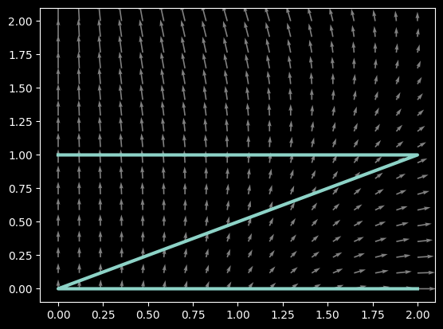

Drew Youngren dcy2@columbia.edu
$C$ is the triangle connecting $(-1, 0)$, $(1,1)$, and $(1,0)$.
Order the following line integrals from least to greatest.
Which vector field below is conservative?
Compute the line integral \[\int_C (x^2 - xy)\,dx + (y- \frac{x^2}{2} + 2)\,dy \] where $C$ is the polygonal path from $(2,0)$ to $(0,0)$ to $(2,1)$ to $(0,1)$.

Suppose a force is given by $\vec F = -\nabla f$ and a particle of mass $m$ traverses a path $\vec r(t), a \leq t \leq b$.
\[ \text{W} = \int\limits_C \vec F\cdot d\vec r\]Suppose a force is given by $\vec F = -\nabla f$ and a particle of mass $m$ traverses a path $\vec r(t), a \leq t \leq b$.
\[ \text{W} = \int\limits_C \vec F\cdot d\vec r = f(\vec r(a)) - f(\vec r(b))\]Suppose a force is given by $\vec F = -\nabla f$ and a particle of mass $m$ traverses a path $\vec r(t), a \leq t \leq b$.
\[ \begin{align*}\text{W} &= \int_a^b m\vec r''(t)\cdot \vec r'(t)\,dt \\ &= \int_a^b \frac{d}{dt}\left(\frac12 m \vec r'(t) \cdot \vec r'(t) \right)\,dt \\ &= \frac12 m |\vec r'(b)|^2 - \frac12 m |\vec r'(a)|^2 \end{align*}\]Suppose a force is given by $\vec F = -\nabla f$ and a particle of mass $m$ traverses a path $\vec r(t), a \leq t \leq b$.
\[ \frac12 m |\vec r'(b)|^2 + f(\vec r(b)) = \frac12 m |\vec r'(a)|^2 + f(\vec r(a)) \]The Gravitational force from a mass $M$ at the origin on a mass $m$ at position $\vec x$ is \[ \vec G = -\frac{GMm \vec x}{|\vec x|^3}. \] Find the work done moving an object from the surface of the earth to the end of the universe.